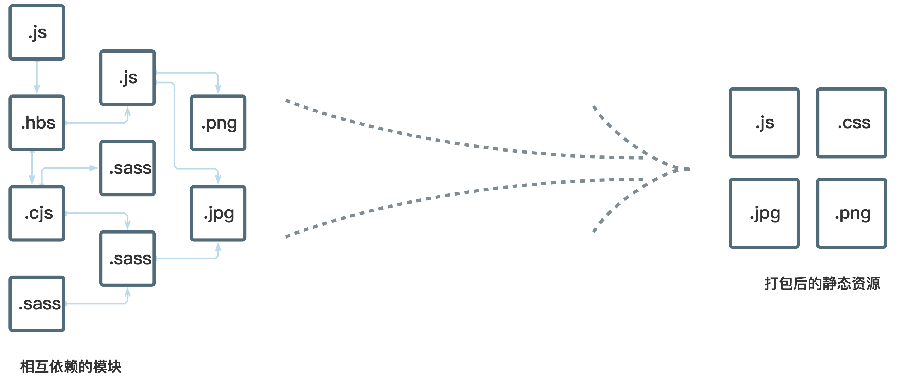

Webpack

Webpack 是现代 JavaScript 应用的静态模块打包工具。Webpack 非常适合处理模块化组织的代码，它支持前端开发中的多种模块方案，例如：
- ES6 模块系统，如
import语句 - CommonJS 模块系统，例如
require()语句 - AMD 风格的模块系统，如
define、require语句 - css/sass/less 文件中的
@import语句 - 样式表里对图片文件的依赖声明，也可以被 webpack 处理为模块，例如
background: url(...)，甚至 HTML 文件中的图片元素（<img src=...>）
基本概念
入口（Entry）
入口点（Entry Point）通常是某些特定的文件或目录，对于每个入口文件，webpack 会从它开始进行依赖分析，每个找到的文件会被处理为中间结果（bundles）。Webpack 支持设置单个或多个入口点。
输出目录（Output）
Webpack 配置对象的 output 属性用于指定构建后的文件存放目录，以及如何去命名这些文件（例如在文件名中添加摘要值）。
加载器（Loaders）
Webpack 自身可以只处理 JavaScript 模块，通过 Loaders 则可以处理其他类型的文件（例如 CSS/Image）。如果配置了 css-loader，那么你的代码里就可以通过 import 语句来声明该组件所依赖的样式表，webpack.config.js 做类似这样的声明：
/**
* 需要安装 `css-loader` 和 `style-loader`
*/
module.exports = {
module: {
rules: [{
test: /\.css$/,
use: [ 'style-loader', 'css-loader' ]
}]
}
};
module.exports = config;
组件代码就可以这样写了：
import css from 'file.css';
// 或者
import 'file.css';
插件（Plugins）
依赖分析
JavaScript 模块的依赖分析是 webpack 的核心流程之一。
常见的 loaders
常见的插件
HtmlWebpackPlugin
ExtractTextWebpackPlugin